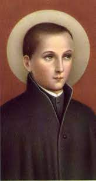

"SÃO JOÃO BERCHMANS"


"ALICERÇADO NA PUREZA DO SEU CORAÇÃO E NA VERDADE CRISTÃ, ESCREVEU CORAJOSAMENTE COM O SEU PRÓPRIO SANGUE, QUE A SANTÍSSIMA VIRGEM MARIA, PELO MÉRITO DE SER A MÃE DO FILHO DE DEUS (JESUS), TEVE A SUA CONCEIÇÃO (NASCIMENTO) ILIBADA, NÃO SOFRENDO A AÇÃO PERNICIOSA DO PECADO ORIGINAL".
DUZENTOS ANOS DEPOIS, O PAPA PIO IX LENDO OS PRECIOSOS E CORRETOS ARGUMENTOS DELE, PROCLAMOU O "DOGMA DA IMACULADA CONCEIÇÃO DA SANTÍSSIMA VIRGEM MARIA".
=ÍNDICE=
 -
"ÚLTIMAS PALAVRAS" + "FOTOGRAFIAS"
-
"ÚLTIMAS PALAVRAS" + "FOTOGRAFIAS"
 -
-  -
-  -
-